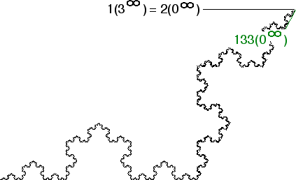

| Consider the point 1(3infinity) = 2(0infinity), the apex of the Koch curve. |
| To show this point has no tangent, we shall produce a sequence of points converging to the apex, with the chords from these points to the apex alternating over a 30 degree range. |
|  |
| Next conider the chord between the apex and 133(0infinity). |
| Now the pattern should be clear: both sequences of points |
| 13...32(0infinity) and 13...3(0infinity) |
| approach the apex 1(3infinity) |
| Chords from 13k(0infinity) to the apex make an angle of 30 deg with the horizontal. |
| Chords from 13k2(0infinity) to the apex make an angle of 60 deg with the horizontal. |
| Combining these two sequences we obtain a sequence approaching the apex with chord angles alternating over a 30 degree range. |
Return to Addresses in the Koch Curve.